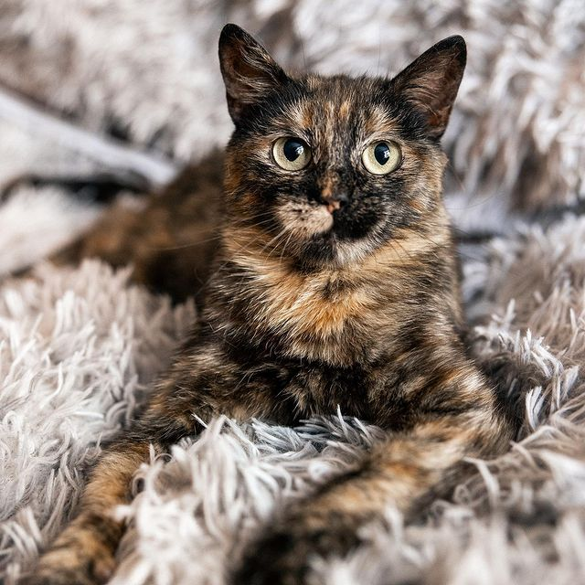
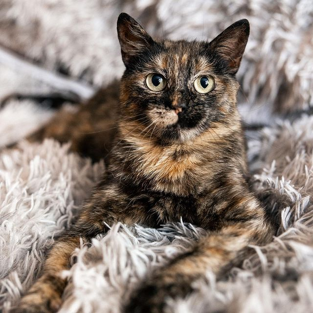

Zoopatrul


Organisation pour le sauvetage des renards et autres animaux sauvages. La guerre n'épargne personne - ni les gens, ni les animaux domestiques, ni les animaux sauvages. Cette organisation est l'une des rares à se soucier de la faune pendant la guerre. Leur rêve est de construire un centre de réadaptation pour les renards.


 

L'organisation "Dvor_nyashkam dom" est située à Kiev et a besoin d'une aide financière. Elle est engagée dans les soins, le traitement et la recherche d'une famille pour les animaux de compagnie sans abri. Parmi leurs pupilles se trouvent non seulement des chats et des chiens, mais aussi des chinchillas et d'autres animaux. Il y a quelques mois, un grand projet très nécessaire a été lancé - l'ouverture d'un centre de stérilisation gratuit. Directement en Ukraine, vous pouvez également aider en devenant conservateur ou en promenant des chiens.
lukashevychvalery@gmail.com |
||
Monobank carte: 4441 1144 4821 0375 |
||
Privatbank carte: 5168 7453 0186 7120 |
UAnimals est une organisation ukrainienne de protection des animaux. Ils aident les refuges et les particuliers à évacuer les animaux de compagnie de la zone de guerre, fournissent des soins vétérinaires et des soins appropriés aux animaux. L'organisation a également un Uanimals.kids projet, dans lequel ils encouragent les enfants ukrainiens à aider les animaux et expliquent comment le faire correctement.
PayPal@uanimals.org
IBAN: UA873052990000026007016225530
Nom de l`entreprise: UANIMALS CE
Nom de la banque: JSC CB “PRIVATBANK”, 1D HRUSHEVSKOHO STR., KYIV, 01001, UKRAINE
Swift-code: PBANUA2X
Adresse de la banque: UA 04210, Kyiv ave. Heroiv Stalingrada b. 25 sq. 57